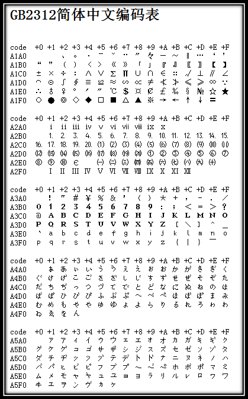
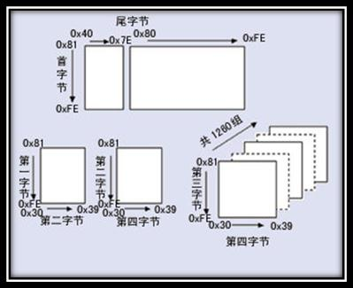

文字集合と文字エンコーディング——すべてのソフトウェア開発者が無条件に習得すべき知識！
皆さんもきっと、あるウェブページを開いたら、文字化けのように表示されてしまった経験があるでしょう？HTTPのAccept-Charset、Accept-Encoding、Accept-Language、Content-Encoding、Content-Languageなどのメッセージヘッダーフィールドを覚えていますか？これらがまさに、これから説明する内容です。
目次：
- 1.基礎知識
- 2.よく使われる文字集合と文字エンコーディング
- 2.1. ASCII文字集合&エンコーディング
- 2.2. GBXXXX文字集合&エンコーディング
- 2.3. BIG5文字集合&エンコーディング
- 3.Unicode文字集合&UTFエンコーディング
- 3.1.UCS & UNICODE
- 3.2.UTF-32
- 3.3.UTF-16
- 3.4.UTF-8
- 4.Accept-Charset/Accept-Encoding/Accept-Language/Content-Type/Content-Encoding/Content-Language
- 5.参考文献&関連資料
1.基礎知識
コンピュータに保存されている情報は、すべて2進数で表されています。そして、画面上で見る英語や漢字などの文字は、2進数を変換した結果です。分かりやすく言えば、どのような規則に従って文字をコンピュータに保存するか（例えば'a'を何で表すか）を「エンコーディング（符号化）」と呼びます。逆に、コンピュータに保存された2進数を解析して表示することを「デコーディング（復号）」と呼びます。これは暗号学における暗号化と復号に似ています。デコードの過程で誤ったデコード規則を使用すると、'a'が'b'として解析されたり、文字化けが発生したりします。
文字集合（Charset）：システムがサポートするすべての抽象文字の集合です。文字は、さまざまな文字や記号の総称であり、各国の文字、句読点、図形記号、数字などを含みます。
文字エンコーディング（Character Encoding）：これは一連の法則であり、その法則を用いて、自然言語の文字の集合（例：アルファベットや音節表）と、別のものの集合（例：番号や電気パルス）との対応付けを行うことができます。つまり、記号集合と数値体系の間に対応関係を確立することで、情報処理の基本的な技術です。通常、人々は記号集合（一般的には文字）を使って情報を表現します。一方、コンピュータベースの情報処理システムは、部品（ハードウェア）の異なる状態の組み合わせを利用して情報を保存・処理します。部品の異なる状態の組み合わせは数値体系の数字を表すことができるため、文字エンコーディングとは、記号をコンピュータが受け入れ可能な数値体系の数に変換することで、その数をデジタルコードと呼びます。
2.よく使われる文字集合と文字エンコーディング
よく使われる文字集合の名前：ASCII文字集合、GB2312文字集合、BIG5文字集合、GB18030文字集合、Unicode文字集合などです。コンピュータがさまざまな文字集合の文字を正確に処理するには、文字エンコーディングを行う必要があります。これにより、コンピュータがさまざまな文字を認識・保存できるようになります。
2.1. ASCII文字集合&エンコーディング
ASCII（American Standard Code for Information Interchange、アメリカ情報交換標準コード）は、ラテン文字に基づくコンピュータエンコーディングシステムです。主に現代英語を表示するために使用され、その拡張版であるEASCIIは、他の西ヨーロッパ言語をおおよそ表示できます。これは現在最も一般的なシングルバイトエンコーディングシステムですが（Unicodeに追い上げられる兆しがあります）、国際標準ISO/IEC 646と同等です。
ASCII文字集合：主に制御文字（Enterキー、バックスペース、改行キーなど）と表示可能な文字（英字の大文字小文字、アラビア数字、欧文記号）が含まれます。
ASCIIエンコーディング：ASCII文字集合をコンピュータが受け入れ可能な数値体系の数に変換する規則です。7ビットで1文字を表し、合計128文字です。しかし、7ビットエンコーディングの文字集合は128文字しかサポートできないため、より多くのヨーロッパの一般的な文字を表すためにASCIIは拡張されました。ASCII拡張文字集合は8ビットで1文字を表し、合計256文字です。ASCII文字集合をデジタルエンコーディング規則にマッピングしたものは、次の図のとおりです。

図1 ASCIIエンコーディング表

図2 拡張ASCIIエンコーディング表
ASCIIの最大の欠点は、26の基本ラテン文字、アラビア数字、イギリス式句読点しか表示できないことであり、そのため現代アメリカ英語の表示にしか使用できません（また、naïve、café、éliteなどの英語中の外来語を扱う際には、綴りの規則に違反することになっても、すべてのアクセント記号を取り除かなければなりません）。一方、EASCIIは一部の西ヨーロッパ言語の表示問題を解決しましたが、他の多くの言語には依然として対応できません。そのため、現在のMacintoshコンピュータはASCIIを捨ててUnicodeを採用しています。
2.2. GBXXXX文字集合&エンコーディング
コンピュータが発明された当初およびその後長い間、主にアメリカや一部の先進国で使用されており、ASCIIはユーザーのニーズを十分に満たしていました。しかし、中国にもコンピュータが登場した後、中国語を表示するために、漢字をコンピュータが受け入れ可能な数値体系の数に変換するためのエンコーディング規則を設計する必要がありました。
中国の専門家たちは、127番以降の奇妙な記号（つまりEASCII）を廃止し、次のように規定しました。127未満の文字の意味は元のままですが、127より大きい2つの文字が連続している場合は、1つの漢字を表します。前の1バイト（高バイトと呼ばれる）は0xA1から0xF7まで使用され、後の1バイト（低バイト）は0xA1から0xFEまで使用されます。これにより、約7000以上の簡体字漢字を組み合わせることができます。これらのエンコーディングには、数学記号、ローマ・ギリシャ文字、日本語の仮名なども含まれており、ASCIIに元々あった数字、句読点、文字もすべて2バイト長のエンコーディングに再エンコードされました。これがいわゆる「全角」文字であり、元の127番未満のものは「半角」文字と呼ばれます。
上記のエンコーディング規則がGB2312です。GB2312またはGB2312-80は、中国国家標準の簡体字中国語文字集合であり、正式名称は『情報交換用漢字符号化文字集合・基本集合』、別名GB0とも呼ばれ、中国国家標準総局によって発行され、1981年5月1日に施行されました。GB2312エンコーディングは中国本土で広く使われており、シンガポールなどでも採用されています。中国本土のほぼすべての中国語システムと国際化されたソフトウェアがGB2312をサポートしています。GB2312の登場により、漢字のコンピュータ処理のニーズが基本的に満たされ、収録された漢字は中国本土での使用頻度の99.75%をカバーしています。人名や古漢語などに現れる稀な漢字にはGB2312は対応できないため、後にGBKやGB 18030漢字文字集合が登場しました。下の図はGB2312エンコーディングの最初の部分です（非常に大きいため、最初の部分のみを記載しています。詳細はGB2312簡体字中国語エンコーディング表を参照してください）。

図3 GB2312エンコーディング表の最初の部分
GB 2312-80は6763の漢字しか収録しておらず、多くの漢字、例えばGB 2312-80発表後に簡略化された漢字（「啰」など）、一部の人名用漢字（例えば中国の元首相朱鎔基の「鎔」の字）、台湾や香港で使用される繁体字、日本語や朝鮮語の漢字などは収録されていませんでした。そこで、マイクロソフトはGB 2312-80の未使用のエンコーディング領域を利用し、GB 13000.1-93の全文字を収録したGBKエンコーディングを策定しました。マイクロソフトの資料によると、GBKはGB2312-80の拡張であり、CP936コードページ（Code Page 936）の拡張です（以前のCP936はGB 2312-80とまったく同じでした）。これはWindows 95簡体字中国語版で最初に実装されました。GBKはGB 13000.1-93の全文字を収録していますが、エンコーディング方式は異なります。GBK自体は国家標準ではなく、かつて国家技術監督局標準化司と電子工業部科技・品質監督司によって「技術規範指導文書」として公布されただけです。当初のGB13000は業界に採用されることはなく、その後の国家標準GB18030は技術的にGBKと互換性があり、GB13000とは互換性がありません。
GB 18030、正式名称：国家標準GB 18030-2005『情報技術 中国語符号化文字集合』は、中華人民共和国の現在の最新の内部コード文字集合であり、GB 18030-2000『情報技術 情報交換用漢字符号化文字集合 基本集合の拡張』の改訂版です。GB 2312-1980と完全に互換性があり、GBKと基本的に互換性があり、GB 13000およびUnicodeのすべての統一漢字をサポートしており、合計70244文字の漢字を収録しています。GB 18030には主に以下の特徴があります：
- UTF-8と同じように、マルチバイトエンコーディングを採用しており、各文字は1バイト、2バイト、または4バイトで構成されます。
- エンコーディング空間は広大で、最大161万文字を定義できます。
- 中国国内の少数民族の文字をサポートしており、造字領域を使用する必要がありません。
- 漢字の収録範囲には、繁体字漢字および日本語・韓国語の漢字が含まれます。

図4 GB18030エンコーディング全体構造
本仕様の初版は、中華人民共和国情報産業部電子工業標準化研究所によって起草され、国家品質技術監督局によって2000年3月17日に発行されました。現行版は、国家品質監督検験検疫総局と中国国家標準化管理委員会によって2005年11月8日に発行され、2006年5月1日に施行されました。この仕様は、中国国内のすべてのソフトウェア製品がサポートする必須仕様です。
2.3. BIG5文字集合&エンコーディング
で对外発表されている。Unicodeは絶えず拡張されており、新しいバージョンごとにさらに多くの新しい文字が追加される。これまでの第6版までに、Unicodeはすでに10万文字以上を含んでいる（2005年、Unicodeの10万文字目が採用され、標準の一つとして認められた）。視覚的参考として使用できるコード図表のセット、一連のエンコーディング方法と標準文字エンコーディングのセット、上付き文字・下付き文字などの文字特性を含む列挙なども含まれる。Unicodeコンソーシアム（The Unicode Consortium）は非営利団体によって運営され、Unicodeのその後の発展を主導している。その目標は、既存の文字エンコーディング方式をUnicodeエンコーディング方式に置き換えること、特に既存の方式が多言語環境において限られた容量と非互換性の問題しか持たない場合にそれを実現することである。
Big5コードは2バイト文字セットであり、ダブル8ビットコード保存方式を採用し、2バイトで1文字を格納する。1バイト目は「高位バイト」、2バイト目は「低位バイト」と呼ばれる。「高位バイト」は0x81-0xFEを使用し、「低位バイト」は0x40-0x7Eおよび0xA1-0xFEを使用する。Big5の分区（区画）は以下の通り：
| 0x8140-0xA0FE | ユーザー定義文字（造字区）用に予約。 |
| 0xA140-0xA3BF |
句読点、ギリシャ文字、特殊記号。0xA259-0xA261には9つの計量用漢字：兙兛兞兝兡兣嗧瓩糎が格納されている。 |
| 0xA3C0-0xA3FE | 予約。この区画は造字区として開放されていない。 |
| 0xA440-0xC67E | 常用漢字。まず筆画順、次に部首順でソートされる。 |
| 0xC6A1-0xC8FE | ユーザー定義文字（造字区）用に予約。 |
| 0xC940-0xF9D5 | 次常用漢字。こちらもまず筆画順、次に部首順でソートされる。 |
| 0xF9D6-0xFEFE | ユーザー定義文字（造字区）用に予約。 |
3.Unicode文字集合&UTFエンコーディング
偉大な創想Unicode——Unicodeについては単独で述べる必要がある
天朝（中国）と同様に、コンピュータが世界各国に普及したとき、現地の言語と文字に適合させるため、GB2312/GBK/GB18030/BIG5のようなエンコーディング方式が設計・実装された。このように各々が独自の方式を採用したため、ローカルでの使用には問題がないが、ネットワークに登場すると、互換性がないために相互アクセスで文字化けが発生した。
この問題を解決するために、偉大な創想が生まれた——Unicodeである。Unicodeエンコーディングシステムは、あらゆる言語のあらゆる文字を表現するために設計された。4バイトの数字を使用して、各アルファベット、記号、または表意文字（ideograph）を表現する。各数字は、少なくとも何らかの言語で使用される唯一の記号を表す。（すべての数字が使用されているわけではないが、総数はすでに65535を超えているため、2バイトの数字では不十分である。）複数の言語で共用される文字は、通常同じ数字でエンコードされる。ただし、合理的な語源学（etymological）上の理由がある場合はこの限りではない。このようなケースを考慮しなければ、各文字は1つの数字に対応し、各数字は1つの文字に対応する。すなわち、曖昧性は存在しない。「モード」を記録する必要もない。U+0041は常に'A'を表し、たとえその言語に'A'という文字がなくても同様である。
コンピュータ科学の分野において、Unicode（統一碼、万国碼、単一碼、標準万国碼）は業界の標準であり、コンピュータが世界中の数十種類の文字システムを表現することを可能にする。Unicodeは通用字符集（Universal Character Set）の標準に基づいて発展し、同時に書籍の形式
（このように理解できる：Unicodeは文字セットであり、UTF-32/UTF-16/UTF-8は3つの文字エンコーディング方式である。）
3.1.UCS & UNICODE
通用字符集（Universal Character Set）（Universal Character Set，UCS）はISOによって制定されたISO 10646（またはISO/IEC 10646）標準によって定義された標準文字セットである。歴史的には、単一の文字セットを創設しようとする2つの独立した組織が存在した。すなわち、国際標準化機構（ISO）と、多言語ソフトウェアメーカーで構成される統一碼連盟（Unicodeコンソーシアム）である。前者はISO/IEC 10646プロジェクトを開発し、後者は統一碼プロジェクトを開発した。そのため、当初は異なる標準が制定された。
1991年前後、両プロジェクトの参加者は、世界に互換性のない2つの文字セットは必要ないことを認識した。そこで、彼らは両者の作業成果を統合し始め、単一のエンコーディング表を創設するために協力した。Unicode 2.0以降、UnicodeはISO 10646-1と同じ字庫と字碼を採用した。ISOも、ISO 10646がU+10FFFFを超えるUCS-4符号に値を割り当てないことを約束し、両者の一致を保った。両プロジェクトは現在も存在し、それぞれ独自に標準を発表している。しかし、統一碼連盟とISO/IEC JTC1/SC2は、両者の標準のコード表の互換性を維持することに合意し、将来の拡張についても密接に協調して調整している。発表時、Unicodeは一般的に関連する字碼で最も一般的な字形を採用するが、ISO 10646は一般的に可能な限りCentury字形を採用する。
3.2.UTF-32
前述の、4バイトの数字を使用して各アルファベット、記号、または表意文字（ideograph）を表現し、各数字が少なくとも何らかの言語で使用される唯一の記号を表すエンコーディング方式は、UTF-32と呼ばれる。UTF-32は別名UCS-4とも呼ばれ、Unicode文字をエンコードする協定であり、各文字に4バイトを使用する。空間の観点から言えば、非常に非効率的である。
この方式には利点もある。最も重要な点は、文字列内のN番目の文字を定数時間で特定できることである。N番目の文字は4×N番目のバイトから始まるためである。各コードポイントが固定長のバイトを使用するのは一見便利に見えるが、この方式は他のUnicodeエンコーディングほど広く使用されていない。
3.3.UTF-16
Unicodeの文字は非常に多いが、実際にはほとんどの人が最初の65535文字以外を使用することはない。そこで、もう一つのUnicodeエンコーディング方式であるUTF-16（16ビット＝2バイトのため）が生まれた。UTF-16は0–65535の範囲の文字を2バイトでエンコードし、本当に使用頻度の低い「星芒層（astral plane）」内の65535を超えるUnicode文字を表現する必要がある場合は、いくつかの特殊なテクニックを使用する。UTF-16エンコーディングの最も明らかな利点は、空間効率がUTF-32の2倍であることである。各文字の格納にUTF-32の4バイトではなく2バイト（65535範囲外を除く）しか必要としないためである。さらに、ある文字列が星芒層の文字を含まないと仮定すれば、その仮定が成立する限り、定数時間でN番目の文字を見つけることができる。これは常に良い推定である。そのエンコーディング方法は：
- 文字コードUが0x10000未満、すなわち10進数の0から65535以内の場合、直接2バイトで表現する。
- 文字コードUが0x10000より大きい場合、UNICODEエンコーディング範囲の最大は0x10FFFFであり、0x10000から0x10FFFFの間には合計0xFFFFF個のコードがあり、つまり20ビットあればこれらのコードを表すことができる。U'を0-0xFFFFFの間の値とし、その上位10ビットを高位として16ビットの値0xD800と論理or演算し、下位10ビットを低位として0xDC00と論理or演算する。このように構成された4バイトがUのエンコーディングとなる。
UTF-32およびUTF-16エンコーディング方式には、他にもあまり明白でない欠点がある。コンピュータシステムによってバイトの保存順序が異なる。つまり、文字U+4E2DはUTF-16エンコーディング方式では、そのシステムがビッグエンディアン（big-endian）かリトルエンディアン（little-endian）かに応じて、4E 2Dまたは2D 4Eとして保存される可能性がある。（UTF-32エンコーディング方式の場合、さらに多くの可能なバイト配列がある。）ドキュメントが自分のコンピュータから出ない限り、安全である——同じコンピュータ上の異なるプログラムは同じバイト順序（byte order）を使用する。しかし、システム間でこのドキュメントを転送する必要がある場合、例えばワールドワイドウェブ上では、現在のバイトがどのように保存されているかを示す方法が必要となる。そうでなければ、ドキュメントを受信したコンピュータは、2つのバイト4E 2DがU+4E2Dを表すのかU+2D4Eを表すのかを知ることができない。
この問題を解決するために、マルチバイトのUnicodeエンコーディング方式は「バイト順序マーク（Byte Order Mark）」を定義した。これは特殊な非印刷文字であり、ドキュメントの先頭に含めることで使用しているバイト順序を示すことができる。UTF-16の場合、バイト順序マークはU+FEFFである。バイトFF FEで始まるUTF-16エンコードのドキュメントを受信した場合、そのバイト順序が一方向（one way）であると判断できる。FE FFで始まる場合は、バイト順序が逆であると判断できる。
3.4.UTF-8
UTF-8（8-bit Unicode Transformation Format）は、Unicodeのための可変長文字エンコーディング（定長碼）であり、プレフィックスコードでもある。Unicode標準のあらゆる文字を表現でき、そのエンコーディングの最初のバイトは依然としてASCIIと互換性があるため、従来ASCII文字を処理していたソフトウェアは、修正なしまたは一部の修正のみでそのまま使用し続けることができる。そのため、電子メール、ウェブページ、その他のテキストの保存や転送を行うアプリケーションにおいて、優先的に採用されるようになってきている。インターネット工学タスクフォース（IETF）は、すべてのインターネットプロトコルがUTF-8エンコーディングをサポートすることを要求している。
UTF-8は各文字を1〜4バイトでエンコードする：
- 128個のUS-ASCII文字はわずか1バイトのエンコーディングで済む（Unicode範囲はU+0000からU+007F）。
- 2. 結合記号付きラテン文字、ギリシャ文字、キリル文字、アルメニア文字、ヘブライ文字、アラビア文字、シリア文字、およびターナ文字は2バイトで符号化する必要があります（Unicode範囲はU+0080からU+07FFまで）。
- その他の基本多言語面（BMP）内の文字（大部分の常用字を含む）は3バイトで符号化されます。
- その他のほとんど使用されないUnicode補助平面の文字は4バイトで符号化されます。
頻繁に使用されるASCII文字の処理において非常に効率的です。拡張ラテン文字セットの処理でもUTF-16に劣りません。中国語の文字に関しては、UTF-32よりも優れています。また、（この点については数学的根拠を示すつもりはないので、私を信じてください。）ビット演算の性質上、UTF-8を使用すればバイト順の問題は存在しなくなります。UTF-8で符号化された文書は、異なるコンピュータ間でも同じビットストリームになります。
一般的に、Unicode文字列では、コードポイント数から表示に必要な長さや、文字列表示後にテキストバッファ内でカーソルを置くべき位置を決定することはできません。結合文字、プロポーショナルフォント、表示不可能な文字、右から左への文字がその理由です。したがって、UTF-8文字列では文字数とコードポイント数の関係がUTF-32より複雑ですが、実際には異なる状況に遭遇することはほとんどありません。
利点
- UTF-8はASCIIのスーパーセットです。純粋なASCII文字列も正当なUTF-8文字列であるため、既存のASCIIテキストは変換する必要がありません。従来の拡張ASCII文字セット向けに設計されたソフトウェアは、通常、変更なしまたはほとんど変更なしでUTF-8で使用できます。
- 標準のバイト指向ソートルーチンを使用したUTF-8のソートは、Unicodeコードポイントに基づくソートと同じ結果になります。（ただし、特定の言語や文化において受け入れ可能な文字の並び順が存在する可能性は低いため、この有用性は限定的です。）
- UTF-8とUTF-16はどちらもXML文書の標準符号化方式です。他のすべての符号化方式は、明示的またはテキスト宣言によって指定する必要があります。
- バイト指向の文字列検索アルゴリズムはすべてUTF-8データに使用できます（入力が完全なUTF-8文字のみで構成されている場合）。ただし、文字数を数える正規表現やその他の構造には注意が必要です。
- UTF-8文字列は、単純なアルゴリズムで確実に識別できます。つまり、任意の他の符号化において文字列が正当なUTF-8として現れる可能性は低く、文字列の長さが増すにつれて小さくなります。例えば、文字値C0、C1、F5からFFは決して出現しません。より高い信頼性を得るには、正規表現を使用して不正な過長表現や代替値を検出できます（以下を参照：W3 FAQ: Multilingual FormsのUTF-8文字列を検証する正規表現）。
欠点
各文字が異なるバイト数で符号化されるため、文字列内のN番目の文字を探す操作はO(N)の複雑さになります。つまり、文字列が長いほど、特定の文字を特定するのに時間がかかります。また、文字をバイトに符号化し、バイトを文字に復号化するにはビット変換も必要です。
4.Accept-Charset/Accept-Encoding/Accept-Language/Content-Type/Content-Encoding/Content-Language
HTTPでは、文字セットと文字符号化に関連するメッセージヘッダーはAccept-Charset/Content-Typeです。また、主にAccept-Charset/Accept-Encoding/Accept-Language/Content-Type/Content-Encoding/Content-Languageを区別します：
Accept-Charset：ブラウザが自分が受け取る文字セットを宣言します。これは、この記事の前半で紹介したさまざまな文字セットと文字符号化方式（gb2312、utf-8など）です（通常、Charsetには対応する文字符号化方式が含まれます）。
Accept-Encoding：ブラウザが自分が受け取る符号化方法を宣言します。通常は圧縮方法を指定し、圧縮をサポートするかどうか、どの圧縮方法（gzip、deflate）をサポートするかを示します（注意：これは文字符号化だけを指すものではありません）。
Accept-Language：ブラウザが自分が受け取る言語を宣言します。言語と文字セットの違い：中国語は言語であり、中国語にはbig5、gb2312、gbkなど複数の文字セットがあります。
Content-Type：WEBサーバーがブラウザに、応答オブジェクトのタイプと文字セットを伝えます。例：Content-Type: text/html; charset='gb2312'
Content-Encoding：WEBサーバーが、応答内のオブジェクトを圧縮するためにどの圧縮方法（gzip、deflate）を使用したかを示します。例：Content-Encoding: gzip
Content-Language：WEBサーバーがブラウザに、応答オブジェクトの言語を伝えます。
5.参考文献&関連資料
- 百度百科. 文字セット.http://baike.baidu.com/view/51987.htm, 2010-12-28
- ウィキペディア. 文字符号化.http://zh.wikipedia.org/wiki/%E5%AD%97%E7%AC%A6%E7%BC%96%E7%A0%81, 2011-1-5
- ウィキペディア. ASCII.http://zh.wikipedia.org/wiki/ASCII, 2011-4-5
- ウィキペディア. GB2312.http://zh.wikipedia.org/wiki/GB_2312, 2011-3-17
- ウィキペディア. GB18030.http://zh.wikipedia.org/wiki/GB_18030, 2010-3-10
- ウィキペディア. GBK.http://zh.wikipedia.org/wiki/GBK, 2011-3-7
- ウィキペディア. Unicode.http://zh.wikipedia.org/wiki/Unicode, 2011-4-30
- Laruence. 文字符号化の詳細解説（基礎）.http://www.laruence.com/2009/08/22/1059.html, 2009-8-22
- Jan Hunt. Character Sets and Encoding for Web Designers - UCS/UNICODE. http://www.uninetnews.com/other_standards/charset.php
著者：吴秦
出典：http://www.cnblogs.com/skynet/archive/2011/05/03/2035105.html
クリックしてノートを共有
<p style="font-size:14px;">ノートはこの記事の内容を拡張したものである必要があります！</p><br> <p style="font-size:12px;"><a href="../tougao.html" target="_blank">記事投稿はこちらをクリック</a></p> <p style="font-size:14px;"><a href="./runoob-user-test-intro.html" target="_blank">登録招待コードの取得方法</a></p> <h3 class="text-muted"><i class="fa fa-info-circle" aria-hidden="true"></i> ノートを共有する前に<a href=".." class="runoob-pop">ログイン</a>が必要です！</h3> <p><a href="./runoob-user-test-intro.html" target="_blank">登録招待コードの取得方法</a></p>